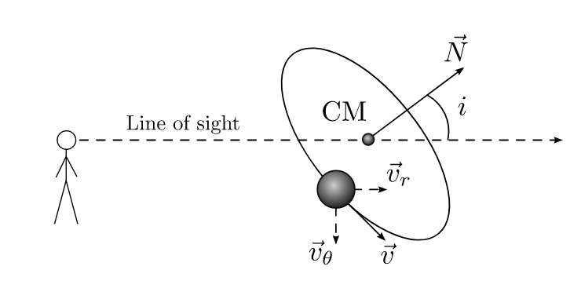

Forrige side🙂 🙁Inklinasjon
Vi har så langt antatt at stjernas baneplan ligger langs med synsretningen vår slik at hele synslinja (som går fra observatøren og gjennom et av legemene) ligger i baneplanet som stjernas bane utspenner. Det er normalt ikke tilfelle:

I figuren har vi definert
inklinasjonen som er vinkelen i mellom normalen til baneplanet og synslinja!
Denne definisjonen bør du kunne og huske!
Men da må vi endre formelen vår slik at vi får inn inklinasjonen i! Hvordan blir formelen seende ut med inklinasjonsvinkelen i??? Ikke gå videre før du har forsøkt å se det fra figurene. Neste side